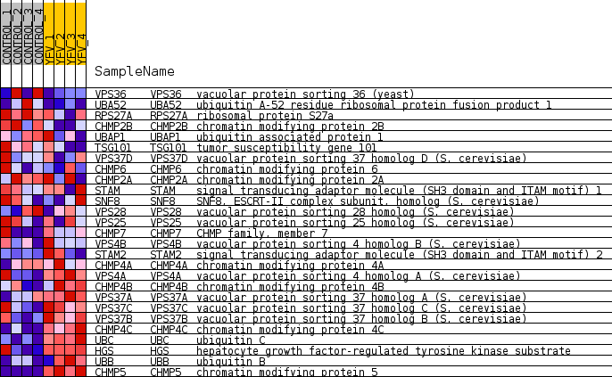
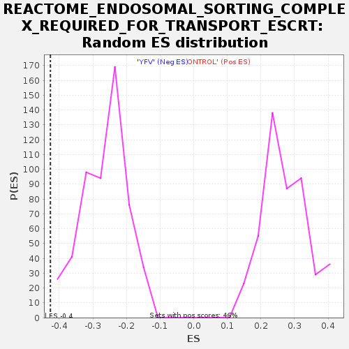

Profile of the Running ES Score & Positions of GeneSet Members on the Rank Ordered List
| Dataset | MATRIZ_GSE99081_collapsed_to_symbols.gsea_CLASE_99081.cls#CONTROL_versus_YFV |
| Phenotype | gsea_CLASE_99081.cls#CONTROL_versus_YFV |
| Upregulated in class | YFV |
| GeneSet | REACTOME_ENDOSOMAL_SORTING_COMPLEX_REQUIRED_FOR_TRANSPORT_ESCRT |
| Enrichment Score (ES) | -0.42631838 |
| Normalized Enrichment Score (NES) | -1.5980662 |
| Nominal p-value | 0.0 |
| FDR q-value | 0.06689833 |
| FWER p-Value | 0.893 |
| SYMBOL | TITLE | RANK IN GENE LIST | RANK METRIC SCORE | RUNNING ES | CORE ENRICHMENT | |
|---|---|---|---|---|---|---|
| 1 | VPS36 | vacuolar protein sorting 36 (yeast) | 1217 | 0.591 | -0.0024 | No |
| 2 | UBA52 | ubiquitin A-52 residue ribosomal protein fusion product 1 | 1969 | 0.488 | 0.0112 | No |
| 3 | RPS27A | ribosomal protein S27a | 4134 | 0.232 | -0.0938 | No |
| 4 | CHMP2B | chromatin modifying protein 2B | 4433 | 0.208 | -0.0866 | No |
| 5 | UBAP1 | ubiquitin associated protein 1 | 4639 | 0.188 | -0.0761 | No |
| 6 | TSG101 | tumor susceptibility gene 101 | 5095 | 0.149 | -0.0859 | No |
| 7 | VPS37D | vacuolar protein sorting 37 homolog D (S. cerevisiae) | 5163 | 0.141 | -0.0727 | No |
| 8 | CHMP6 | chromatin modifying protein 6 | 5579 | 0.108 | -0.0851 | No |
| 9 | CHMP2A | chromatin modifying protein 2A | 5720 | 0.096 | -0.0819 | No |
| 10 | STAM | signal transducing adaptor molecule (SH3 domain and ITAM motif) 1 | 5812 | 0.090 | -0.0764 | No |
| 11 | SNF8 | SNF8, ESCRT-II complex subunit, homolog (S. cerevisiae) | 6085 | 0.069 | -0.0846 | No |
| 12 | VPS28 | vacuolar protein sorting 28 homolog (S. cerevisiae) | 6375 | 0.047 | -0.0966 | No |
| 13 | VPS25 | vacuolar protein sorting 25 homolog (S. cerevisiae) | 7057 | 0.008 | -0.1377 | No |
| 14 | CHMP7 | CHMP family, member 7 | 10690 | -0.074 | -0.3526 | No |
| 15 | VPS4B | vacuolar protein sorting 4 homolog B (S. cerevisiae) | 10838 | -0.088 | -0.3508 | No |
| 16 | STAM2 | signal transducing adaptor molecule (SH3 domain and ITAM motif) 2 | 11137 | -0.114 | -0.3552 | No |
| 17 | CHMP4A | chromatin modifying protein 4A | 11558 | -0.151 | -0.3625 | No |
| 18 | VPS4A | vacuolar protein sorting 4 homolog A (S. cerevisiae) | 12088 | -0.202 | -0.3704 | No |
| 19 | CHMP4B | chromatin modifying protein 4B | 12996 | -0.300 | -0.3895 | Yes |
| 20 | VPS37A | vacuolar protein sorting 37 homolog A (S. cerevisiae) | 13247 | -0.333 | -0.3639 | Yes |
| 21 | VPS37C | vacuolar protein sorting 37 homolog C (S. cerevisiae) | 13252 | -0.334 | -0.3231 | Yes |
| 22 | VPS37B | vacuolar protein sorting 37 homolog B (S. cerevisiae) | 13548 | -0.371 | -0.2958 | Yes |
| 23 | CHMP4C | chromatin modifying protein 4C | 14110 | -0.465 | -0.2732 | Yes |
| 24 | UBC | ubiquitin C | 14182 | -0.479 | -0.2187 | Yes |
| 25 | HGS | hepatocyte growth factor-regulated tyrosine kinase substrate | 14569 | -0.510 | -0.1799 | Yes |
| 26 | UBB | ubiquitin B | 15642 | -0.918 | -0.1332 | Yes |
| 27 | CHMP5 | chromatin modifying protein 5 | 15938 | -1.383 | 0.0186 | Yes |

